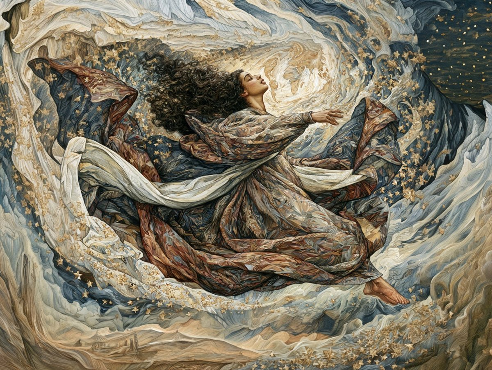

The Power of Joy
God designed it this way: when we come together to rejoice and celebrate before Him, something powerful happens.

What We Need to Live
To stay alive, we need to breathe, eat, drink, and sleep. But that isn't enough. We also need to be loved, and we need to know what we're living for. And here's what's remarkable: when Scripture speaks to us, it keeps insisting on three more things — joy, worship, and remembrance. "You shall rejoice in your feast" (Deut 16:14). "You shall worship the Lord your God" (Matt 4:10). "You shall remember the whole way that the LORD your God has led you" (Deut 8:2).
Joy, worship, and remembrance can seem like things that take care of themselves. But try to imagine what happens when they slip out of your life. If nothing has brought me joy for a long time, I can stop expecting anything from tomorrow. If I forget the road God has led me on, it gets harder to trust Him today. And if there's no love in my worship, I can say all the right words and still be, as the apostle put it, "a noisy gong or a clanging cymbal" (1 Cor 13:1).
And maybe the most frightening thing that can happen to a person is losing the answer to one simple question: What am I living for?
God Insists on Joy
In Scripture, joy isn't a suggestion. It's a command. The apostle Sha'ul (Paul) writes, "Rejoice in the Lord always; again I will say, rejoice" (Phil 4:4). And again: "Rejoice always" (1 Thess 5:16). He doesn't repeat himself by accident.
The Torah puts it even more bluntly. Among the reasons given for the disasters that would fall on Israel is this one: "Because you did not serve the LORD your God with joyfulness and gladness of heart, because of the abundance of all things, therefore you shall serve your enemies whom the LORD will send against you" (Deut 28:47–48). Serving without joy stands right alongside disobedience. God cares not only about what we do, but about the heart we bring to it.
A Celebration Before the World Began
Scripture shows us a celebration that took place before history began, at the creation of the world. Wisdom herself describes it in Proverbs:
"When he established the heavens, I was there; when he drew a circle on the face of the deep, when he made firm the skies above, when he established the fountains of the deep, when he assigned to the sea its limit, so that the waters might not transgress his command, when he marked out the foundations of the earth, then I was beside him, like a master workman, and I was daily his delight, rejoicing before him always, rejoicing in his inhabited world and delighting in the children of man" (Prov 8:27–31).
Every mark of a feast is here: joy, sacred service, creativity, worship. The Hebrew makes the picture even more vivid. The word translated "master workman" is AMON (אָמוֹן, master craftsman, H525) — the one who works side by side with the Creator. "Daily his delight" is SHA'ASHUIM (שַׁעֲשֻׁעִים, delight, H8191). And "rejoicing" is MESAHEKET (מְשַׂחֶקֶת, playing, rejoicing), from SAHAK (שָׂחַק, to laugh, to play, H7832). Wisdom isn't just standing by while the world is made. She is playing in God's presence, and her joy reaches out to people.
Put yourself in Wisdom's place, and you could say: I am His delight every day; I rejoice before Him at all times, all across His world. Wisdom doesn't keep to herself. She gives herself away, she serves people, and her joy becomes the expression of her relationship with the Most High.
You Can Taste Joy
A friend of mine is a world-class chef. He knows a pastry chef who makes custom cakes at the very highest level. And he could always tell, just by tasting one of her cakes, what kind of mood she'd been in when she made it. Her cakes never failed — she's a true master — but he could taste whether she'd been weighed down by something or working in complete freedom and joy.
Our joy can show up in something as tangible as that. It goes into what we make, and it stays there.
David Dances Before the Ark
God designed it so that when we gather and celebrate before Him, it has a powerful effect. That's why He commands, "For seven days you shall keep the feast to the LORD your God … so that you will be altogether joyful" (Deut 16:15).
We see the same thing in David's life. When he and all Israel were bringing the ark of God up to Jerusalem, "when those who bore the ark of the LORD had gone six steps, he sacrificed an ox and a fattened animal" (2 Sam 6:13). In that moment David was ministering before God like a priest. "And David danced before the LORD with all his might. And David was wearing a linen ephod" (2 Sam 6:14). The Hebrew word here is MEKHARKER (מְכַרְכֵּר, whirling, H3769): he spun like a top. He leaped — verse 16 uses MEFAZEZ (מְפַזֵּז, leaping, H6339) — and lost himself completely. For him there was nothing but himself and his God, and he didn't care what anyone thought.
In that moment David was like Wisdom rejoicing before the Creator. And there were those who didn't get it. When Michal, daughter of King Sha'ul, saw him, "she despised him in her heart" (2 Sam 6:16).
Celebration Builds
David understood what a feast really is and what celebrating before the Creator accomplishes in the spiritual realm. Through that procession he was shaping all of Israel — and, you could say, the whole universe. He knew how precious this was in God's eyes.
Every feast God calls "the appointed feasts of the LORD … my appointed feasts" (Lev 23:2) is always bound up with building a sanctuary, and always bound up with joy.
We Are Called to Joy
Imagine something impossible: God creating the universe in a state of deep depression. What would our world look like? It's frightening even to think about.
Creation is a state of joy, and God created with joy. In that moment Wisdom was joy itself, in person. Joy was both the tool and the raw material of creation — a state that spreads and, like light, takes hold of everything around it. This is what God has called us to. We are called to joy.
 Shavuot. The Feast of the Gift of Freedom
Shavuot. The Feast of the Gift of Freedom The Exodus Is About Us
The Exodus Is About Us The Feast. Creating Through Memory
The Feast. Creating Through Memory